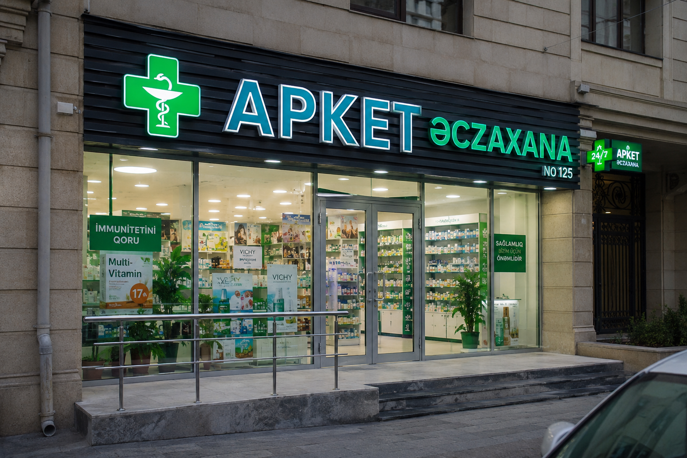

APKET (ƏCZAXANA ) ŞƏBƏKƏSİ
Əczaçılıq şəbəkəsində uşaq qidaları və qida əlavələrinin saxlanması, daşınması və satışı proseslərində vahid nəzarət mexanizmi mövcud olmamış, temperatur rejiminin monitorinqi və məhsulların izlənəbilənliyi üzrə qeydiyyat sistemləri tam formalaşdırılmaması və bu vəziyyət normativ tələblərə uyğunluq və məhsul təhlükəsizliyi baxımından risklər yaratması kimi uyğunsuzluqların olması.
AQTA-nın qüvvədə olan tələblərinə uyğun olaraq məhsulların qəbulundan son istehlakçıya təqdim olunmasına qədər izlənəbilənlik sistemi qurulmuş, saxlama, paylama və satış prosesləri üçün prosedurlar hazırlanmışdır. Uşaq qidaları və qida əlavələri üzrə temperatur monitorinqi sistemi tətbiq edilmiş, qeydiyyat formaları hazırlanmış və məsul əməkdaşlar üçün təlimlər keçirilmişdir.